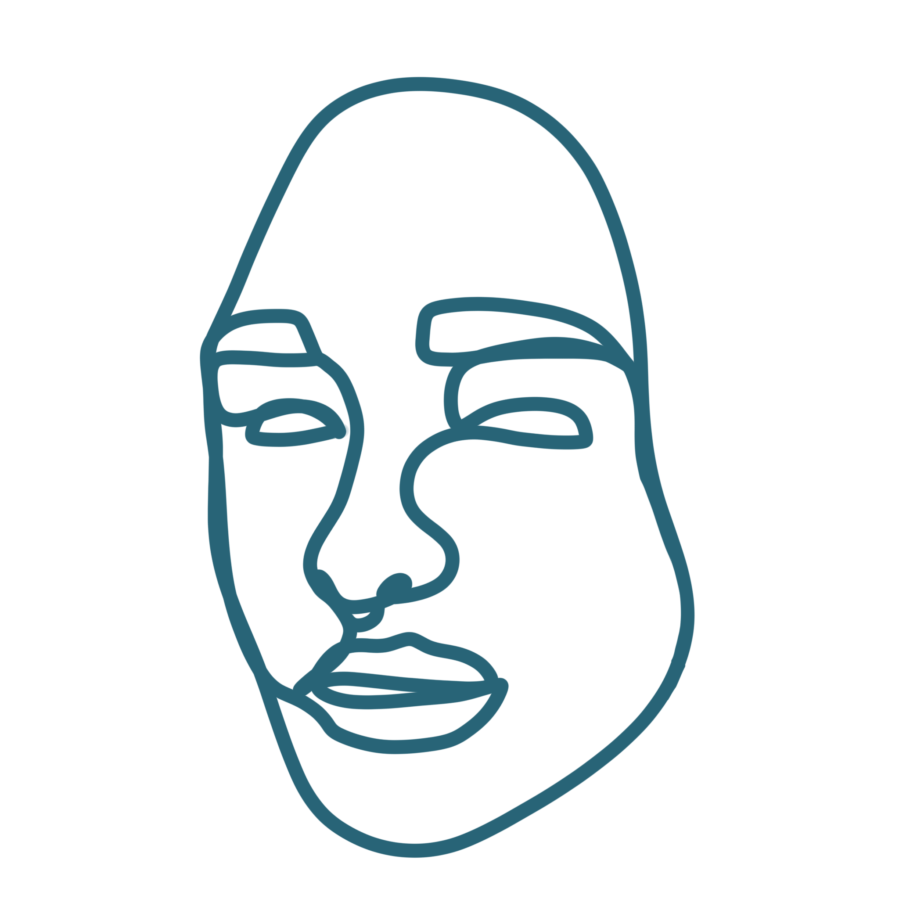

The average person can recall or recognize 5,000 faces, the median of a range of 1,000-10,000.

This number may appear large but with personal relationships, colleagues, pupils, friends, neighbors, professors, bosses, actresses, musicians, influencers, businessmen, politicians, artists, etc. the number grows large quickly.
The lifestyle you consume rightfully reflects in your brain's recognition.
PHACES, serves as a documentation of faces that I wish not to forget regardless of the personal connection I have to them. The faces are displayed in a stylistic way reflective of continual line street art portraits to disguise and allude to the neglection of identity through memory.
Who would be among your library of faces?
Who have you forgotten?